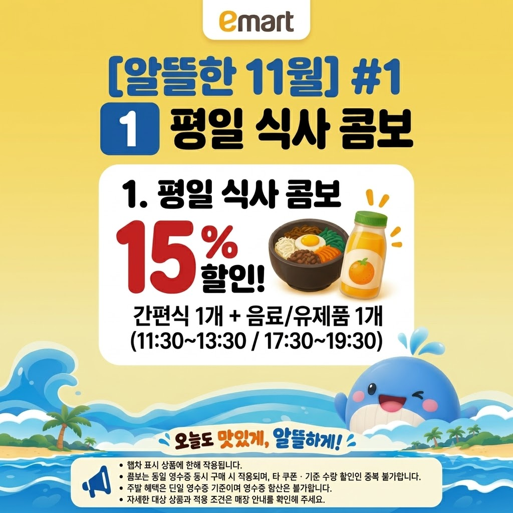
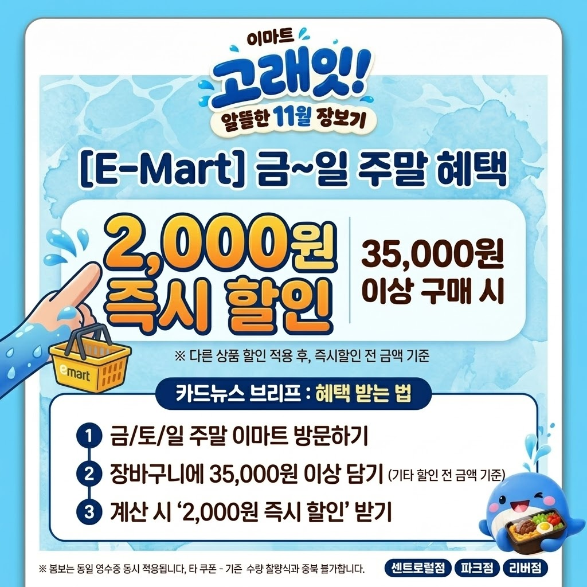
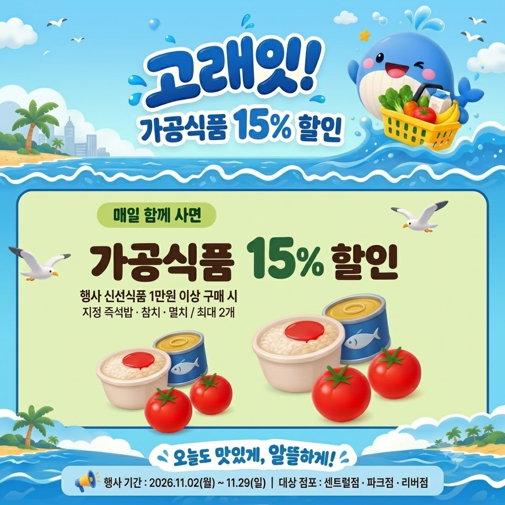
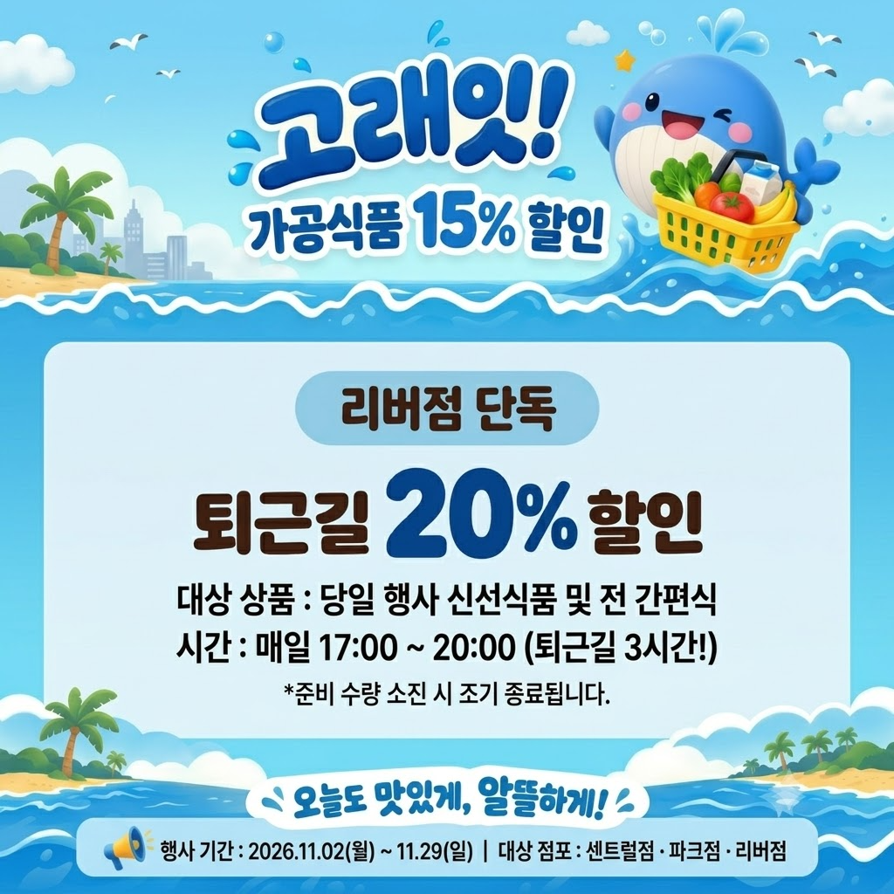

설문조사 해석의 통계적 한계 및 해석 주의사항
본 설문조사는 매장 이용 고객 표본 총 19명 (20대 78.9% 편중)을 대상으로 진행된 소규모 정성 조사입니다. 전체 고객군을 대표하기에 통계적 한계가 존재하므로, 매출 감소나 구매전환율 저하의 원인이 '확정'되었다고 단정할 수 없으며, '탐색적 가설'이자 '운영 중 추가 검증이 필요한 정성적 신호'로만 해석해야 합니다.
과거 55일간 3개 점포의 POS 및 방문·구매 데이터를 기반으로 매출 규모, 요일별 패턴, 카테고리별 재고회전을 비교 분석합니다.
55일간의 일별 매출 변동과 주말 스파이크 패턴을 확인합니다.
화요일 저점(6,110만 원)과 토요일 피크(9,820만 원) 편차
신선식품(2.56회)의 고회전과 생활용품(0.79회)의 저회전 정체 현상을 시각화하여 교차구매 전략의 타깃을 제시합니다.
고객 설문과 데이터 분석을 거쳐 수립된 '오늘 바로 먹고, 오늘 바로 할인받는 실속 장보기' 핵심 실행 전략입니다.
화요일 등 주중 매출 저점 방어 및 간편식+음료 동반구매 유도

32,700원에 묶인 장바구니 객단가를 35,000원 이상으로 단계적 상향

고회전 신선식품(회전율 2.56)을 유인책 삼아 저회전 가공식품 소진 촉진

리버점 저조한 구매율(41.92%) 극복 및 퇴근 시간 결품 방지 + 마감할인

사전 고객 선호도 조사($N=19$) 분석 보고서의 실증 가설과 기획안 반영 사항을 검토합니다.
본 설문조사는 매장 이용 고객 표본 총 19명 (20대 78.9% 편중)을 대상으로 진행된 소규모 정성 조사입니다. 전체 고객군을 대표하기에 통계적 한계가 존재하므로, 매출 감소나 구매전환율 저하의 원인이 '확정'되었다고 단정할 수 없으며, '탐색적 가설'이자 '운영 중 추가 검증이 필요한 정성적 신호'로만 해석해야 합니다.
가격 부담(36.8%) 외에도 품절/구색 부족(42.1%)이 결정적 이탈 요인으로 지목됨
현장 즉시 2,000원 할인 선호도가 57.9%로 실물 사은품(21.1%) 대비 압도적
점포별 응답 신호를 비교하여 매장 상권별 맞춤형 프로모션 방향을 도출했습니다.
| 점포 구분 | 1위 이탈 사유 | 2위 이탈 사유 | 현장 진단 및 전략적 시사점 (가설) |
|---|---|---|---|
| 리버점 ($N=7$) | 품절 / 재고 부족 (28.6%) | 단순 구경 (28.6%) | 퇴근길 결품이 빈손 퇴장의 핵심 원인일 가능성 시사 → 16:30 2차 긴급 입고 가설 수립 |
| 센트럴점 ($N=6$) | 가격 부담 / 혜택 부족 (50.0%) | 상품 구색 부족 (33.3%) | 유동인구 대비 가격 민감도 높음 → 주말 3.5만원 즉시할인 체감도 극대화 필요 |
| 파크점 ($N=6$) | 가격 부담 / 혜택 부족 (50.0%) | 품절 / 구색 / 구경 (각 16.7%) | 주거 상권 주부층의 실속 장보기 지향 → 평일 식사 콤보 수용도 4.33점(최고) |
결합 음료 2종 확정
설문 선호 1위 탄산/과일주스(42.1%)와 2위 커피/냉차(26.3%)를 메인 번들로 채택하여 수요의 68.4% 흡수
즉시 2,000원 할인 전면화
실물 사은품 대신 고객 선호 57.9%의 현장 즉시 할인을 메인 혜택으로 통일 (센트럴점은 3주차 사은품 병행 검토)
할인율 15% 상향 & 가공식품 우선
기존 10% 할인은 유인 부족(47.4% 불만)으로 15% 상향. 온라인 구매 관성이 큰 생활용품 대신 즉석밥·참치 우선 연계
리버점 16:30 입고 + 간편식 타깃
이탈 1위인 결품 방지를 위해 16:30 보충 진열 확정. 퇴근 선호 1위인 간편식(57.1%) 중심 20% 마감세일 전면 진열
10월 사전 준비부터 11월 4주간의 운영, 12월 최종 평가까지의 마일스톤과 16대 필수 점검 항목을 관리합니다.
SKU 확정, POS 설정 및 테스트, 리허설(10/30), 최종 점검(11/01)
첫 3일 가격 오류·결품 우선 수정, 고객 문의 수집
품목별 동반구매·할인비·대기·폐기 모니터링
중앙 4인+점장 3인: 유지/품목 교체/발주 축소 판정
효과 확인 품목 집중 진열, POP/POS 동시 수정
과다 발주 방지, 11/29 폐점 시 조건 자동 해제
할인비·폐기 대조, 상시 운영 전환 여부 최종 결정
| 상태 | 완료 시점 | 확인 항목 (체크 내용) | 책임 담당자 | 소요 시간 | 완료 증빙 |
|---|
2026년 8~9월 과거 실제 실적(Baseline)과 11월 프로모션 목표치(Target)를 비교하며, 실결제액 산정 원칙을 검증합니다.